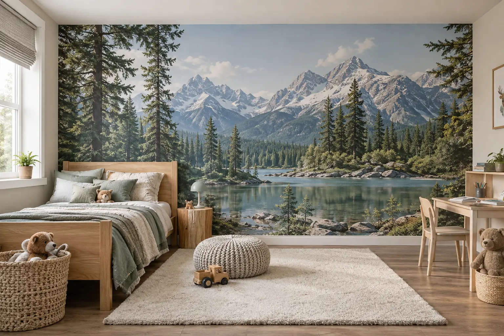

Living & dormitor
Peisaje, texturi, modele botanice, abstracte sau fotografii personale.
Tapet personalizat după dimensiunile spațiului, pornind de la o fotografie, un peisaj, un logo, un model grafic sau o idee creată special pentru tine.
Imaginea este pregătită pentru proporțiile reale ale peretelui, astfel încât elementele importante să rămână vizibile și bine încadrate.
Peisaje, texturi, modele botanice, abstracte sau fotografii personale.
Natură, animale, hărți, personaje și teme adaptate vârstei și camerei.
Design care schimbă atmosfera și pune în valoare identitatea spațiului.
Fundaluri vizuale memorabile pentru clienți, produse și zone foto.
Elemente de brand integrate într-un design realizat pentru peretele firmei.
Nu ai imaginea pregătită? Pornim de la idee și construim conceptul vizual.

Fiecare perete are alte proporții, prize, întrerupătoare, uși sau mobilier. Macheta se pregătește după măsurile primite, cu poziționarea atentă a elementelor principale.
Măsoară peretele în mai multe puncte și trimite lățimea și înălțimea maxime. Spune-ne dacă există grinzi, colțuri sau zone care nu trebuie acoperite.
O poză clară ne ajută să vedem prizele, întrerupătoarele, mobilierul și zona care trebuie păstrată liberă în compoziție.
Lățime, înălțime și o fotografie cât mai dreaptă a peretelui.
Trimiți imaginea dorită sau ne explici ideea și stilul încăperii.
Adaptăm imaginea la proporțiile peretelui și verificăm încadrarea.
După confirmarea designului stabilim materialul și detaliile proiectului.
Trimite dimensiunile peretelui, o fotografie a spațiului și modelul dorit. Dacă ai doar ideea, construim împreună varianta potrivită.
Oferta se stabilește în funcție de dimensiune, imagine, material și complexitatea designului. Nu sunt afișate prețuri fixe.